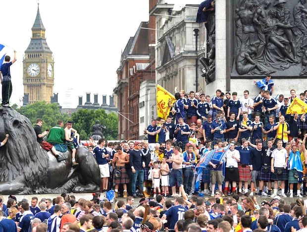
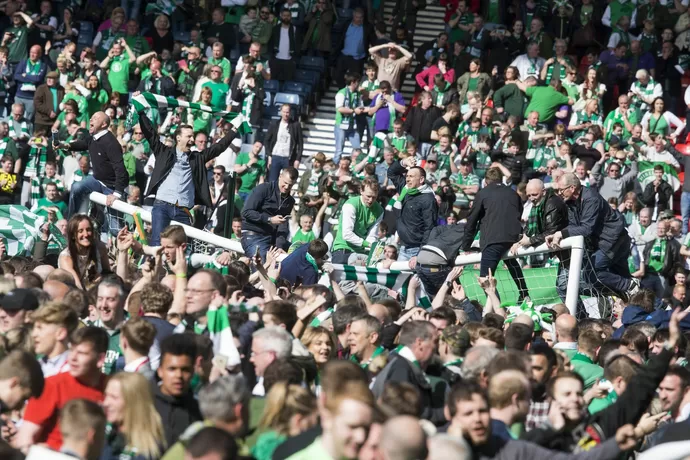

Marrocos disputará a Copa do Mundo pela sétima vez em 2026 e alcançará um feito inédito: será sua terceira participação consecutiva no torneio. A seleção chega determinada a consolidar sua força após a histórica campanha de 2022 e mostrar que o quarto lugar no Catar não foi por acaso. Os Leões do Atlas serão o Em 30 de novembro de 1872, a Escócia disputou com a Inglaterra o primeiro jogo entre seleções nacionais da história do futebol, terminando em 0 a 0 — sendo portanto uma das mais antigas seleções do mundo. A seleção retorna à Copa do Mundo em 2026 após 28 anos de ausência, tendo garantido a vaga ao terminar em primeiro no seu grupo das Eliminatórias Europeias. O grande nome é Scott McTominay, eleito o melhor jogador do Campeonato Italiano na última temporada pelo Napoli.
Seleção
HISTÓRIA
A melhor Copa
do Mundo da
Escócia
A Escócia nunca passou da fase de grupos em nenhuma de suas participações em Copas. Em 1974, fez um jogo e dois empates — e saiu eliminada mesmo invicta, tornando-se a única seleção da história a ser eliminada de uma Copa sem perder nenhum jogo. O saldo de gols foi o verdugo.
1998
A última participação antes do retorno em 2026. Perderam para o Brasil na abertura por 2 a 1, empataram com a Noruega e foram derrotados pelo Marrocos na última rodada
1978
A campanha mais dramática da história escocesa. O técnico Ally MacLeod prometeu o título antes do torneio. Perderam para o Peru, empataram com o Irã, mas venceram a Holanda. MacLeod renunciou. A humilhação foi total.


Momentos inesquecíveis
01
Em 1978, O gol de Archie Gemmill contra a Holanda é considerado um dos mais bonitos da história das Copas — uma jogada individual em que dribla três adversários antes de encobrir o goleiro.
02
Denis Law, Kenny Dalglish e Joe Jordan são os maiores artilheiros históricos da seleção em Mundiais, com 4 gols cada
03
A classificação de 2026 veio com uma vitória dramática por 4 a 2 sobre a Dinamarca, com gols decisivos nos acréscimos, encerrando 28 anos de ausência.
04
Jim Leighton é o jogador com mais jogos da história escocesa em Copas, com 9 partidas disputadas em três edições diferentes (1986, 1990 e 1998).
Detalhes
culturais do país